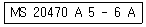
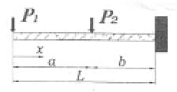
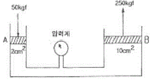

항공산업기사 (2010-09-05 기출문제)
1과목: 항공역학
1. 뒤젖힘각을 가장 옳게 설명한 것은?
- 날개가 수평을 기준으로 위로 올라간 각
- 기체의 세로축과 날개의 시위선이 이루는 각
- 날개 끝의 붙임각을 날개 뿌리의 붙임각보다 크거나 작 게 한 각
- 25%C(코드길이) 되는 점들을 날개뿌리에서 날개끝까지 연결한 직선과 기체의 가로축이 이루는 각
(정답률: 84%)

2. 양력계수가 0.25 인 날개면적 20m2 의 항공기가 시속 720 km의 속도로 비행할 때 발생하는 양력은 몇 N 인가? (단, 공기의 밀도는 1.23 kg/m3 이다.)
- 6150
- 10000
- 123000
- 246000
(정답률: 82%)
3. 항공기가 상승하기위한 수평비행시 필요마력과 상승시 이용마력의 관계로 옳은 것은?
- 이용마력 = 필요마력
- 이용마력 ＞ 필요마력
- 이용마력 ≤ 필요마력
- 이용마력 ＜ 필요마력
(정답률: 83%)
4. 날개골의 명칭 중 평균 캠버선에 대한 설명으로 옳은 것은?
- 두께의 2등분점을 연결한 선
- 앞전과 뒷전을 연결하는 직선
- 날개골의 위쪽과 아래쪽의 곡면
- 시위선에서 수직선을 그었을 때 윗면과 아랫면사이의 수직거리
(정답률: 75%)
5. 가장 큰 쳐든각(Dihedral angle)을 필요로 하는 경우는?
- 날개가 동체의 상부에 위치하는 경우
- 날개가 동체의 하부에 위치하는 경우
- 날개가 동체의 중심부에 위치하는 경우
- 날개가 동체의 상부로부터 약 25% 위치에 있는 경우
(정답률: 73%)
6. 대류권에서는 지표에서 복사되는 열로 인하여 1 km 올라갈 때마다 기온이 어떻게 변하는가?
- 6.5 ℃ 씩 증가한다.
- 6.5 ℃ 씩 감소한다.
- 4.5 ℃ 씩 증가한다.
- 4.5 ℃ 씩 감소한다.
(정답률: 94%)
7. 비행기가 등속도 수평비행을 하고 있다면 이 비행기에 작용하는 하중배수는?
- 0
- 0.5
- 1
- 1.8
(정답률: 83%)
8. 비행기의 받음각이 외부적인 교란에 의해 진동을 시작해서 점차적으로 진동이 감소하여 처음의 상태로 돌아갈 경우를 가장 올바르게 표현한 것은?
- 정적 안정
- 동적 불안정
- 동적 안정
- 정적 불안정
(정답률: 68%)
9. 다음 중 비행기의 세로 안정성에 가장 적은 영향을 미치는 것은?
- 항공기 중심위치
- 수직 안정판의 면적
- 수평 안정판의 면적
- 수평 안정판의 장착위치
(정답률: 79%)
10. 압축성 유동에 대한 설명 중 틀린 것은?
- 유체의 밀도 변화를 고려해야 한다.
- 압축성 유동에서 음속은 유한한 크기를 갖는다.
- 압축성 유동에서 압축계수의 최대값은 1.0 을 넘지 못 한다.
- 배관 내에서 발생하는 수격 현상은 압축성 유동의 한 예이다.
(정답률: 65%)
11. 직경 20 cm 인 원형 배관이 직경 10 cm 인 원형 배관과 연결되어 있다. 직경 20 cm 인 원형 배관을 지난 공기가 직경 10 cm 인 원형 배관을 지나게 되면 유속의 변화는 어떻게 되는가?
- 2배로 증가한다.
- 1/2로 감소한다.
- 4배로 증가한다.
- 1/4로 감소한다.
(정답률: 73%)
12. 비행기의 조종면을 작동하는데 필요한 조종력을 옳게 설명한 것은?
- 중력 가속도에 반비례한다.
- 힌지 모멘트에 반비례한다.
- 비행속도의 제곱에 비례한다.
- 조종면의 폭의 제곱에 비례한다.
(정답률: 80%)
13. 고정 날개 항공기의 자전운동(Auto rotation)이 발생할 수 있는 조건은?
- 낮은 받음각 상태
- 실속 받음각 이전 상태
- 최대 받음각 상태
- 실속 받음각 이후 상태
(정답률: 77%)
14. 프로펠러 항공기의 경우 항속거리를 최대로 하기 위한 조건으로 가장 옳은 것은?
 가 최대인 상태로 비행한다.
가 최대인 상태로 비행한다. 가 최대인 상태로 비행한다.
가 최대인 상태로 비행한다.- 양항비가 최대인 상태로 비행한다.
- 양항비가 최소인 상태로 비행한다.
(정답률: 90%)
15. 다음 중 좋은 날개골이라고 할 수 있는 것은?
- 양력계수가 크고 항력계수도 클 것
- 양력계수가 작고 항력계수도 작을 것
- 양력계수가 작고 항력계수는 클 것
- 양력계수가 크고 항력계수가 작을 것
(정답률: 88%)
16. 프로펠러 효율은 진행율에 비례하게 되는데 진행율이란 무엇인가?
- 추력과 토크와의 비율
- 유효피치와 프로펠러 지름과의 비율
- 유효피치와 기하학적 피치와의 비율
- 기하학적 피치와 프로펠러 지름과의 비율
(정답률: 65%)
17. 헬리콥터의 주기피치(Cyclic Pitch) 조종간에 대한 설명으로 옳은 것은?
- 기관회전수를 조절한다.
- 수직상승비행을 가능하게 한다.
- 꼬리회전날개의 피치를 조절한다.
- 주회전날개(Main rotor)의 피치를 주기적으로 변화시키 며 원하는 수평방향으로 비행하게 한다.
(정답률: 87%)
18. 다음 중 선회비행성능에 대한 설명 중 옳지 않은 것은?
- 정상선회를 하려면 원심력과 양력의 수평성분이 같아야 한다.
- 원심력이 양력의 수평성분인 구심력보다 더 크면 스키 드(Skid)가 나타난다.
- 선회반경을 최소로 하기 위해서는 비행속도를 최소로 하고, 경사각 또한 최소로 하는 것이 좋다.
- 슬립(Slip)은 경사각이 너무 크거나 러더의 조작량이 부족할 경우 일어나기 쉽다.
(정답률: 79%)
19. 고도 1500 m 에서 마하수 0.7 로 비행하는 항공기가 있다. 고도 12000 m 에서 같은 속도로 비행할 때 마하수는? (단, 고도 1500m에서 음속은 335 m/s 이며, 고도 12000m에서 음속은 295 m/s 이다.)
- 약 0.3
- 약 0.5
- 약 0.8
- 약 1.0
(정답률: 74%)
20. 최대 양항비가 10 인 항공기가 고도 2400 m에서 활공을 시작했다면 최대 수평도달 거리는 몇 m 인가?
- 14400
- 24000
- 28800
- 48000
(정답률: 91%)
2과목: 항공기관
21. 열역학 제2법칙에 대한 설명이 아닌 것은?
- 에너지 전환에 대한 조건을 주는 법칙이다.
- 열과 일 사이의 에너지 전환과 보존을 말한다.
- 열은 그 자체만으로는 저온 물체로부터 고온 물체로 이 동할 수 없다.
- 자연계에 아무 변화를 남기지 않고 어느 열원의 열을 계속하여 일로 바꿀 수는 없다.
(정답률: 77%)
22. 항공기 왕복기관 연료의 옥탄가에 대한 설명으로 틀린 것은?
- 연료의 제폭성을 나타낸다.
- 옥탄가는 낮을수록 기관의 효율이 좋아진다.
- 연료의 이소옥탄이 차지하는 체적비율을 말한다.
- 옥탄가가 높을수록 기관의 압축비를 더 높게 할 수 있다.
(정답률: 83%)
23. 지시마력이 나타내는 식 에서 N 이 의미하는 것은? (단, Pmi: 지시평균 유효압력, L: 행정길이, A: 피스톤 넓이, K: 실린더 수이다.)
- 기계효율
- 축마력
- 기관의 회전수
- 제동평균 유효압력
(정답률: 90%)
24. 다음 중 추진시 공기를 흡입하지 않고 기관 자체 내의 고체 또는 액체의 산화제와 연료를 사용하는 비공기 흡입 기관은?
- 로켓
- 펄스제트
- 램제트
- 터보프롭
(정답률: 95%)
25. 왕복기관의 마그네토가 2차 고전압을 발생할 수 있는 최소 회전속도를 무엇이라고 하는가?
- E-갭 스피드(E-gap speed)
- 아이들 회전수(Idle speed)
- 2차 회전수(Secondary speed)
- 커밍-인 스피드(Coming-in speed)
(정답률: 76%)
26. 대형 터보팬기관에서 역추력 장치를 작동시키는 방법은?
- 플랩 작동시 함께 작동한다.
- 항공기의 자중에 따라 고정된다.
- 제동장치가 작동될 때 함께 작동한다.
- 스로틀 또는 파워레버에 의해서 작동한다.
(정답률: 71%)
27. 다음 중 마찰마력을 옳게 표현한 것은?
- 제동마력과 정격마력의 차
- 지시마력과 제동마력의 차
- 지시마력과 정격마력의 차
- 기관의 용적효율과 제동마력의 차
(정답률: 90%)
28. 다음 중 민간 항공기용 가스터빈기관에 사용되는 연료는?
- Jet A-1
- Jet B-5
- JP-4
- JP-8
(정답률: 87%)
29. 배기노즐에서 온도 310 ℃인 가스가 등엔트로피 과정 으로 분사 팽창하여 온도가 298℃ 가 되었다면 배기가스의 분출 속도는 약 몇 m/s 인가? (단, 공기의 정압비열은 0.249 kcal/kgㆍ℃ 이다.)
- 50.5
- 111.8
- 151
- 158.1
(정답률: 32%)
30. 초크(Choked) 또는 테이퍼 그라운드(Taper-ground)실린더 배럴을 사용하는 가장 큰 이유는?
- 시동시 압축압력을 증가시키기 위하여
- 정상 작동온도에서 실린더의 원활한 작동을 위하여
- 정상적인 실린더 배럴(Cylinfer barrel)의 마모를 보상 하기 위하여
- 피스톤 링(Piston ring)의 마모를 미리 알기 위하여
(정답률: 56%)
31. 프로펠러의 역추력(Reverse thrust)은 어떻게 발생하는가?
- 프로펠러의 회전속도를 증가시킨다.
- 프로펠러의 회전강도를 증가시킨다.
- 부(Negative)의 블레이드 각으로 회전시킨다.
- 정(Positive)의 블레이드 각으로 회전시킨다.
(정답률: 92%)
32. 정속 프로펠러에서 프로펠러가 과속상태(Over speed)가 되면 플라이 웨이트(Fly weight)는 어떤 상태인가?
- 밖으로 벌어진다.
- 무게가 감소한다.
- 안으로 오므라진다.
- 무게가 증가된다.
(정답률: 79%)
33. 왕복기관의 크랭크 핀(Crank pin)이 일반적으로 속이 비어있는 목적이 아닌 것은?
- 윤활유의 통로를 형성한다.
- 크랭크 축의 중량을 감소시킨다.
- 크랭크 축의 냉각효과를 갖는다.
- 탄소 퇴적물이 모이는 공간으로 활용된다.
(정답률: 64%)
34. 압축기 입구에서 공기의 압력과 온도가 각각 1기압, 15℃이고, 출구에서 압력과 온도가 각각 7기압, 300℃일 때, 압축기의 단열 효율은 몇 % 인가? (단, 공기의 비열비는 1.4이다.)
- 70
- 75
- 80
- 85
(정답률: 65%)
35. 터보팬기관의 추력에 비례하며 트리밍(Triming)작업의 기준이 되는 것은?
- 연료유량
- 기관압력비(EPR)
- 대기온도
- 터빈입구온도(TIT)
(정답률: 78%)
36. 다음 중 축류 압축기의 실속을 방지하기 위한 방법이 아닌 것은?
- 확산형 배기덕트를 장착한다.
- 다축 기관의 구조를 사용한다.
- 가변 스테이터(Stator)를 장착한다.
- 블리드 밸브(Bleed valve)를 장착한다.
(정답률: 66%)
37. 왕복기관의 체적효율에 영향을 미치지 않는 것은?
- 기관 회전수
- 부적절한 밸브 타이밍
- 기화기 공기온도
- 연료와 공기의 혼합비
(정답률: 39%)
38. 왕복기관 마그네토에 사용되는 콘덴서의 용량이 너무 작으면 발생하는 현상은?
- 점화플러그가 탄다.
- 브레이커 접점이 탄다.
- 기관시동이 빨리 걸린다.
- 2차권선에 고전류가 생긴다.
(정답률: 74%)
39. 가스터빈기관의 공기흡입 덕트(Duct)에서 발생하는 램 회복점을 옳게 설명한 것은?
- 램 압력상승이 최대가 되는 항공기의 속도
- 마찰압력 손실이 최소가 되는 항공기의 속도
- 마찰압력 손실이 최대가 되는 항공기의 속도
- 흡입구 내부의 압력이 대기 압력으로 돌아오는 점
(정답률: 71%)
40. 항공기에 장착되어 있는 터보제트기관을 시동하기 전에 점검해야 할 사항이 아닌 것은?
- 추력 측정
- 엔진의 흡입구
- 엔진의 배기구
- 연결부분 결합상태
(정답률: 86%)
3과목: 항공기체
41. 다음 중 알루미늄 합금 2017 의 Mg 양을 1.5%로 증가시키고 시효 경화의 효과를 높인 합금으로 초듀랄루민(Superduralumin)이라 불리는 것은?
- 2024
- 3003
- 6061
- 7075
(정답률: 78%)
42. 다음 중 응력을 설명한 것으로 옳은 것은?
- 단위 체적당 무게이다.
- 단위 체적당 질량이다.
- 단위 길이당 늘어난 길이이다.
- 단위 면적당 힘 또는 힘의 세기이다.
(정답률: 86%)
43. 산소-아세틸렌 용접 작업을 할 때에 지켜야 할 안전 수칙으로 틀린 것은?
- 산소 용기의 주변온도는 항상 규정된 온도 이하로 유지 해야 한다.
- 토치는 사용 전에 이상이 있는지를 확인하고, 예열 불 꽃은 너무 강하게 하지 않도록 해야 한다.
- 압력 조정기의 각 부분은 오일과 그리스를 사용하여 녹 이 슬지 않도록 한다.
- 산소용기에 충격을 주거나 직사광선에 노출시켜서는 안 된다.
(정답률: 80%)
44. 턴버클(Turn buckle)의 안전한 장착방법이 아닌 것은?
- 턴버클 배럴의 검사용 구멍에 핀이 들어가지 않아야 한다.
- 턴버클 엔드피팅의 나사산이 배럴의 밖으로 일정 수 이 상 나오지 않아야 한다.
- 턴버클이 잘 풀리지 않도록 안전결선으로 묶어져 있어 야 한다.
- 턴버클 엔드피팅은 코터핀을 이용하여 단단히 장착한다.
(정답률: 70%)
45. 감항류별 T류에 속하는 항공기의 실속속도가 80mph라고 하면, 이 항공기에 적용할 수 있는 최소 설계 운용속도는 몇 mph인가?
- 126.5
- 140.5
- 160.5
- 182.5
(정답률: 40%)
46. 무게 1500kg 인 항공기의 중심위치가 기준선 후방 50cm에 위치하고 있으며, 기준선 전방 100cm에 위치한 화물 75kg을 기준선 후방 100cm 위치로 이동시켰을 때 새로운 중심위치는?
- 기준선 후방 40cm
- 기준선 후방 50cm
- 기준선 후방 60cm
- 기준선 후방 70cm
(정답률: 53%)
47. 리벳구멍 뚫기 작업시 리벳과 구멍의 간격에 대한 설명으로 옳은 것은?
- 클리어런스(Clearance)라 하며 일반적으로 0.2 ~ 0.4in 가 가장 적합하다.
- 클리어런스(Clearance)라 하며 일반적으로 0.002 ~ 0.004in 가 가장 적합하다.
- 디스턴스(Distance)라 하며 일반적으로 0.2 ~ 0.4in 가 가장 적합하다.
- 디스턴스(Distance)라 하며 일반적으로 0.002 ~ 0.004in 가 가장 적합하다.
(정답률: 69%)
48. 항공기에 사용되는 구조의 종류가 아닌 것은?
- 트러스구조
- 응력 스킨 구조
- 더블 버팀 구조
- 페일 세이프 구조
(정답률: 85%)
49. 항공기 기체 판재에 적용한 Relief hole의 주된 목적 은?
- 무게 감소
- 강도 증가
- 응력 집중 방지
- 좌굴 방지
(정답률: 90%)
50. 항공기 부식을 예방하기 위한 표면처리 방법이 아닌 것은?
- 마스킹처리(Masking)
- 알로다인처리(Alodining)
- 양극산화처리(Anodizing)
- 화학적피막처리(Chemical conversion coating)
(정답률: 86%)
51. 다음과 같은 항공기용 리벳의 표시 중 5가 의미하는 것은?

- 재질
- 머리형상
- 리벳길이
- 리벳지름
(정답률: 74%)
52. 전단응력만 작용하는 곳에 사용되고 그립길이가 생크의 직경보다 적은 곳에 사용해서는 안되는 리벳은?
- 폭발 리벳(Explosive rivet)
- 블라인드 리벳(Blind rivet)
- 하이쉐어 리벳(Hi-shear rivet)
- 기계적 확장 리벳(Mechanically expand rivet)
(정답률: 69%)
53. 샌드위치구조(Sandwich structure)의 외피를 두드려 코어와 외피 층의 분리여부를 검사하는 방법은?
- Hardness test
- Tapping test
- Bore scope test
- Adhesive test
(정답률: 84%)
54. 접개식 강착장치(Retractable landing gear)에서 부주의로 인해 착륙장치가 접히는 것을 방지하기 위한 안전장치가 아닌 것은?
- UP LOCK
- DOWN LOCK
- SAFETY SWITCH
- GROUND LOCK
(정답률: 72%)
55. 이질 금속간의 접촉부식에서 알루미늄 합금의 경우 A군과 B군으로 구분하였을 때 A군에 속하는 것은?
- 1100
- 2014
- 2017
- 7075
(정답률: 70%)
56. 그림과 같은 외팔보에 집중하중(P1, P2)이 작용할 때 P2 작용 지점에서의 굽힘모멘트를 옳게 나타낸 것은?

- - P1
- - P1a
- - P1b
- - P1L - P2b
(정답률: 46%)
57. 항공기 철금속 재료 중 SAE 4130 은 어떤 강인가?
- 탄소강
- 니켈-크롬강
- 텅스텐강
- 크롬-몰리브덴강
(정답률: 64%)
58. 어떤 온도에서 일정한 응력이 가해질 때 시간에 따라 계속적으로 변형율이 증가하게 되는데 이와 같이 시간에 따라 변형량을 측정하는 시험을 무엇이라 하는가?
- 피로(Fatigue) 시험
- 크리프(Creep) 시험
- 탄성(Elasticity) 시험
- 천이점(Transition point) 시험
(정답률: 89%)
59. 착륙 활주 중 항력을 크게 하고 양력을 작게 하여 브레이크의 효율을 높이는 장치는?
- 서보탭
- 드래그슈트
- 스포일러
- 이중간격플랩
(정답률: 81%)
60. 금속 판재를 굽힘가공을 할 때 응력에 의해 영향을 받지 않는 부위를 무엇이라 하는가?
- 굽힘선(Bend line)
- 몰드선(Mold line)
- 중립선(Netral line)
- 세트백 선(Setback line)
(정답률: 72%)
4과목: 항공장비
61. 그림에서 압력계에 나타나는 압력은 몇 kgf/cm2 인가? (단, A 측의 단면적은 2cm2, B 측은 10cm2 이며, A 측에 작용하는 힘은 50kgf, B 측은 250kgf 이다.)

- 25
- 50
- 100
- 250
(정답률: 68%)
62. 항공기에 많이 사용되는 납축전지의 전압과 셀의 수를옳게 짝지은 것은?
- 12V - 2개, 24V - 4개
- 12V - 4개, 24V - 8개
- 12V - 6개, 24V - 12개
- 12V - 12개, 24V - 24개
(정답률: 71%)
63. 대기속도계의 배관 누설시험 방법으로 가장 옳은 것은?
- 정압공에 부압, 피토관에 정압을 준다.
- 정압공에 정압, 피토관에 부압을 준다.
- 정압공 및 피토관 모두에 부압을 준다.
- 정압공 및 피토관 모두에 정압을 준다.
(정답률: 56%)
64. 배터리 터미널(Terminal)에 부식을 방지하기 위한 방법으로 가장 옳은 것은?
- 증류수로 씻어낸다.
- 터미널에 납땜을 한다.
- 터미널에 페인트로 엷은 막을 만들어 준다.
- 터미널에 그리스(Grease)로 엷은 막을 만들어 준다.
(정답률: 86%)
65. 압력을 기계적 변위로 변환하는 것이 아닌 것은?
- 벨로우
- 다이아프램
- 브르돈 튜브
- 차동 싱크로
(정답률: 71%)
66. 승강계의 모세관 저항이 커짐에 따라 계기의 감도와 지시지연은 어떻게 변화하는가?
- 감도는 증가하고 계기의 지시 지연도 커진다.
- 감도는 증가하고 계기의 지시 지연은 작아진다.
- 감도는 감소하고 계기의 지시 지연은 커진다.
- 감도는 감소하고 계기의 지시 지연도 작아진다.
(정답률: 46%)
67. 병렬 운전하는 교류 발전기의 유효 출력은 무엇에 의해서 제어되는가?
- 발전기의 여자 전류
- 발전기의 출력 전압
- 발전기의 출력 전류
- 정속 구동 장치(CSD)의 회전수
(정답률: 69%)
68. 장시간 사용하지 않고 저장되었던 니켈-카드뮴 축전지의 전해액 높이에 대한 설명으로 옳은 것은?
- 정상보다 낮게 나타낸다.
- 정상보다 높게 나타낸다.
- 정상 상태의 높이를 나타낸다.
- 온도에 따라서 높게 또는 낮게 나타낸다.
(정답률: 60%)
69. 항공기 사고원인 규명 또는 사고 대비를 위한 장치가 아닌 것은?
- CVR
- GPS
- ELT
- DFDR
(정답률: 73%)
70. 정전 용량식 액량계에서 사용되는 콘덴서의 용량과 가장 관계가 먼 것은?
- 극판의 넓이
- 중간 매개체의 유전율
- 극판간의 거리
- 중간 매개체의 절연율
(정답률: 63%)
71. 항공기에서 객실 공기압력 진공 릴리프 밸브를 사용하는 때는?
- 객실압력이 외부압력 보다 높을 때
- 객실압력이 진공상태가 되었을 때
- 객실압력을 진공상태로 유기할 때
- 외부압력이 객실압력보다 높을 때
(정답률: 46%)
72. 항공기 유압회로에 퍼지밸브(Purge valve)의 기능은?
- 회로내에 오염된 기름을 제거한다.
- 회로내에 부족한 압력을 보상시킨다.
- 회로내에 유입된 공기를 배출시킨다.
- 회로내에 과대한 압력을 귀환회로로 보낸다.
(정답률: 54%)
73. A.C.M 에서 수분 분리기의 주된 역할은?
- 공기와 수분을 분리한다.
- 공기의 습도를 조절한다.
- 수분을 객실내에 공급한다.
- 기체내부의 결로현상을 방지한다.
(정답률: 82%)
74. 항공기 VHF 통신 장치에 관한 설명 중 틀린 것은?
- 근거리 통신에 이용된다.
- vhf 통신 채널 간격은 30kHz 이다.
- 수신기에는 잡음을 없애는 스퀠치회로를 사용하기도 한다.
- 국제적으로 규정된 항공 초단파 통신주파수 대역은 108 ~ 136MHz 이다.
(정답률: 74%)
75. 전파고도계(Radio Altimeter)에 대한 설명으로 틀린 것은?
- 전파고도계는 지형과 항공기의 수직거리를 나타낸다.
- 항공기 착륙에 이용하는 전파 고도계의 측정범위는 0 ~ 2500 ft 정도이다.
- 절대고도계라고도 하며, 높은 고도용의 FM형과 낮은 고 도용의 펄스형이 있다.
- 항공기에서 지표를 향해 전파를 발사하여, 그 반사파가 되돌아올 때 까지의 시간을 측정하여 고도를 표시한다.
(정답률: 66%)
76. 항공기에서 직류를 교류로 변환시켜 주는 장치는?
- 정류기(Rectifier)
- 인버터(Inverter)
- 컨버터(Converter)
- 변압기(Transformer)
(정답률: 87%)
77. 다음 중 유압작동 피스톤의 작동속도를 증가시키는 것은?
- 공급유량 감소
- 펌프 회전수 증가
- 작동 실린더의 직경 증가
- 작동 실린더의 tm트로크(stroke) 감소
(정답률: 82%)
78. 여압 계통기에 대한 설명으로 틀린 것은?
- 여압의 비율과 객실고도는 조종실에서 설정이 가능하며 최대 차압의 설정은 조절기로 행해진다.
- 자동조절에서 기체가 지상에 있으면 여압제어밸브는 열 려 있다.
- 최대 차압이 큰 기체 일수록 객실 고도는 높아진다.
- 객실여압 중 급격한 강하를 하면 외기압 보다 객실 압 력이 낮아진다.
(정답률: 45%)
79. 수평의(VG)의 자이로 축에 발생하는 오차에 대한 설명으로 가장 옳은 것은?
- 항공기가 가속, 감속하면 오차가 생기지만 선회에 의해 서는 오차가 생기지 않는다.
- 항공기가 가속, 감속 그리고 선회시 모두 오차를 일으 킨다.
- 항공기가 가속, 감속, 선회시에는 오차가 생기지 않는다.
- 항공기가 가속, 감속에서는 오차가 생기지 않지만 선회 시에는 오차가 생긴다.
(정답률: 55%)
80. 적절한 기관 추력 세팅을 위한 온도에 대한 정보를 조종사에게 제공하는 계기는?
- TAT
- VSI
- LRRA
- DME
(정답률: 74%)